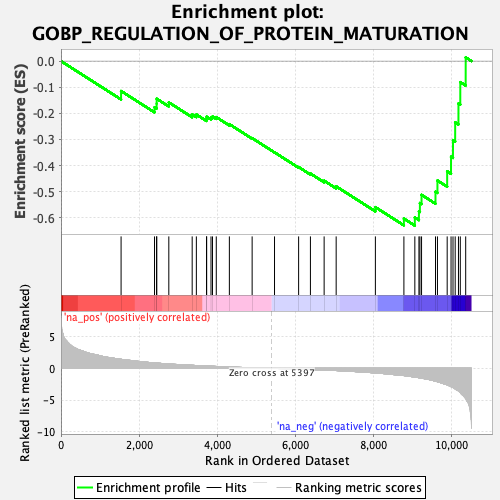
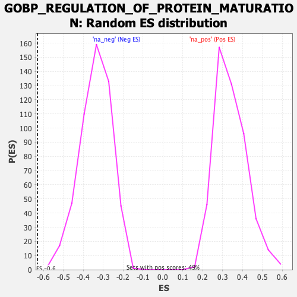

| Dataset | qlf.KOd4vsWTd4_gsea_score |
| Phenotype | NoPhenotypeAvailable |
| Upregulated in class | na_neg |
| GeneSet | GOBP_REGULATION_OF_PROTEIN_MATURATION |
| Enrichment Score (ES) | -0.6297008 |
| Normalized Enrichment Score (NES) | -1.8529325 |
| Nominal p-value | 0.0 |
| FDR q-value | 0.030151125 |
| FWER p-Value | 0.736 |

| SYMBOL | RANK IN GENE LIST | RANK METRIC SCORE | RUNNING ES | CORE ENRICHMENT | |
|---|---|---|---|---|---|
| 1 | SOX4 | 1538 | 1.422 | -0.1145 | No |
| 2 | BAG2 | 2394 | 0.856 | -0.1767 | No |
| 3 | PRNP | 2448 | 0.833 | -0.1629 | No |
| 4 | CTSZ | 2450 | 0.832 | -0.1441 | No |
| 5 | PLGRKT | 2760 | 0.688 | -0.1580 | No |
| 6 | XIAP | 3358 | 0.472 | -0.2043 | No |
| 7 | LPCAT3 | 3465 | 0.440 | -0.2044 | No |
| 8 | PRKACA | 3725 | 0.363 | -0.2209 | No |
| 9 | TNP2 | 3729 | 0.362 | -0.2129 | No |
| 10 | CDK20 | 3840 | 0.333 | -0.2159 | No |
| 11 | MMP14 | 3878 | 0.323 | -0.2121 | No |
| 12 | SERPINE2 | 3975 | 0.297 | -0.2145 | No |
| 13 | SIRT4 | 4310 | 0.215 | -0.2415 | No |
| 14 | CLN3 | 4893 | 0.089 | -0.2950 | No |
| 15 | IFT52 | 5466 | -0.011 | -0.3494 | No |
| 16 | SNX12 | 6083 | -0.112 | -0.4056 | No |
| 17 | RNF139 | 6385 | -0.173 | -0.4304 | No |
| 18 | BCL2L12 | 6736 | -0.258 | -0.4580 | No |
| 19 | CST7 | 7044 | -0.340 | -0.4796 | No |
| 20 | RPS6KA2 | 8048 | -0.713 | -0.5591 | No |
| 21 | NKD2 | 8778 | -1.131 | -0.6031 | Yes |
| 22 | MYH9 | 9058 | -1.361 | -0.5988 | Yes |
| 23 | INPP5B | 9163 | -1.471 | -0.5753 | Yes |
| 24 | ADAM8 | 9188 | -1.511 | -0.5433 | Yes |
| 25 | RHBDD1 | 9230 | -1.555 | -0.5119 | Yes |
| 26 | TMEM59 | 9587 | -2.021 | -0.5000 | Yes |
| 27 | ANXA2 | 9637 | -2.100 | -0.4570 | Yes |
| 28 | CAST | 9886 | -2.587 | -0.4220 | Yes |
| 29 | S100A10 | 9985 | -2.875 | -0.3661 | Yes |
| 30 | PRKACB | 10035 | -3.007 | -0.3025 | Yes |
| 31 | GLG1 | 10091 | -3.220 | -0.2346 | Yes |
| 32 | RUNX1 | 10175 | -3.543 | -0.1621 | Yes |
| 33 | IL1R2 | 10222 | -3.781 | -0.0807 | Yes |
| 34 | GSN | 10360 | -4.752 | 0.0141 | Yes |
